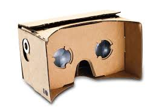

“Experience virtual reality in a simple, fun, and affordable way. Immersive experiences for everyone.” -Google
Virtual reality was kind of new to me since I am not much knowledgeable in the new innovated. But when Google Cardboard was introduced to the class in one of the meetings, I really felt amazed.
Google Cardboard is one of the inventions of Google that enables people to experience virtual reality. Who would’ve thought that with a piece of cardboard, you will have an experience that will feel very real to you. According to Google, “Google Cardboard brings immersive experiences to everyone in simple and affordable way. Whether you fold your own or buy a Works with Google Cardboard certified viewer, you're just one step away from experiencing virtual reality on your smartphone.”
In my opinion, Google cardboard created more opportunities. It paved the way for people to have great and innovative ideas that will focus on visual reality and which will once again change the way people live.Since it is quite cheap and you can even create it on your own, it becomes accessible to more people, to let more people experience the feeling that you are inside and active in a new world.